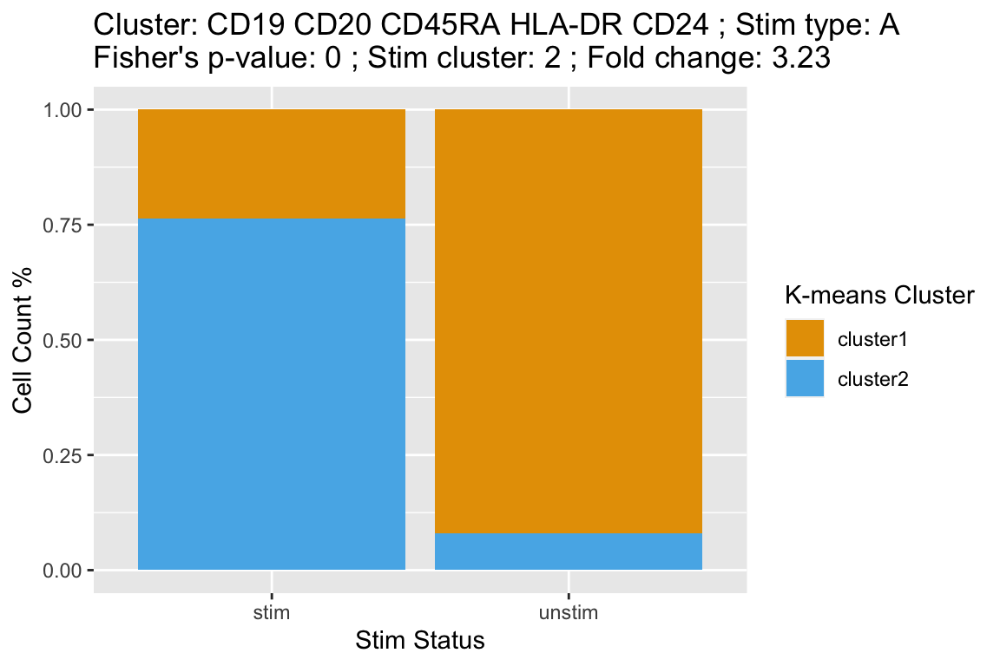
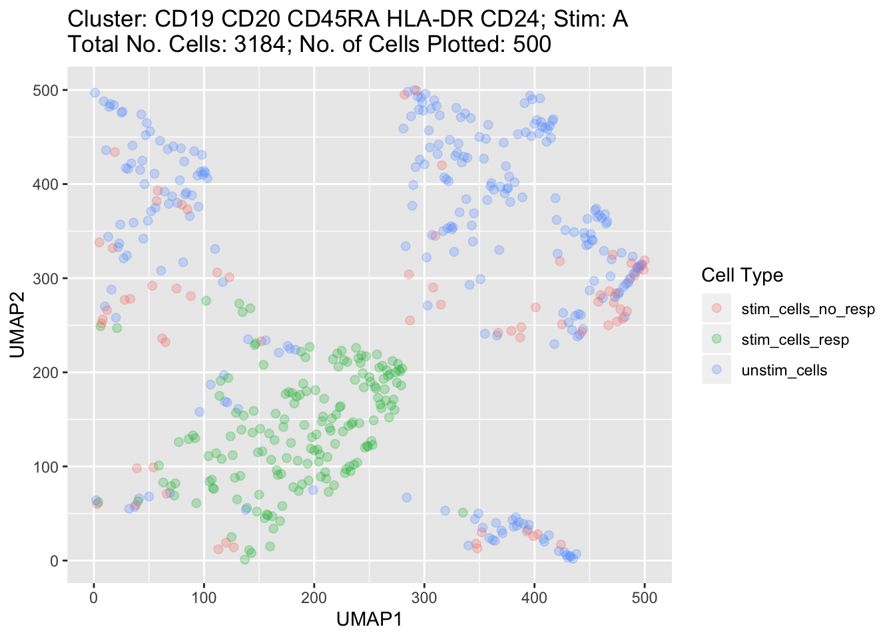
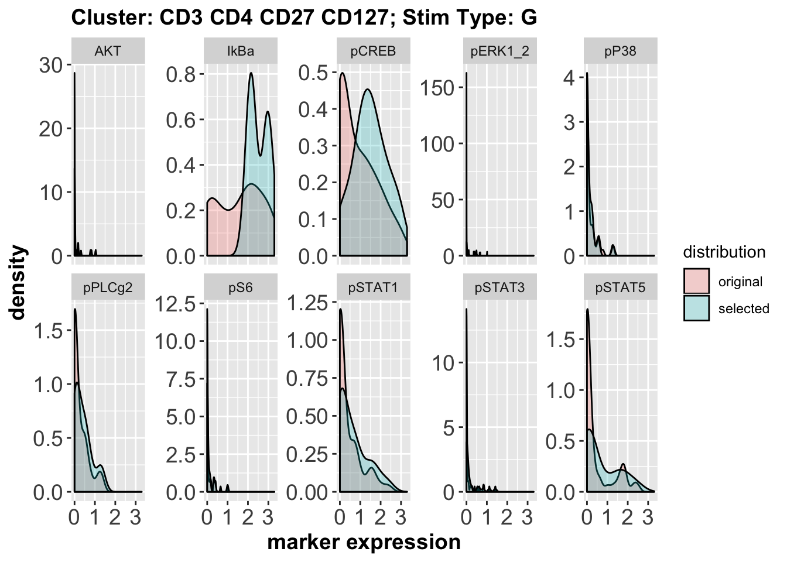

vignettes/stim_cell_selector.Rmd
stim_cell_selector.RmdThe primary function stim_cell_selector() in stimcellselector package follows a heuristic approach to group cells into responding and non-responding. For a combination of cell population and stimulation type (e.g., CD127+ T-helper cells and interferon-alpha), stim_cell_selector() starts by performing k-means clustering on the combined set of cells from stimulated and unstimulated samples. K-means clustering is performed on expression data of all the state markers combined. Upon clustering using a contingency table as drawn below, a Fisher’s exact test determines the effect size and the statistical significance of partitioning. Cells form the combinations that pass the Fisher’s exact test are considered as responding. An optional UMAP plot can also be generated to verify the cell partitioning in responding and non-responding groups visually.
matrix(c(1500, 345, 230, 2500),nrow = 2, ncol = 2, dimnames = list(c("Cluster1", "Cluster2"), c("Stim", "Unstim"))) #> Stim Unstim #> Cluster1 1500 230 #> Cluster2 345 2500
An optional UMAP plot can also be generated to verify the cell partitioning in responding and non-responding groups visually.
An example using the sample CyTOF data set chi11_1k included in the package. suppressMessages() is used to reduce the verbosity of the stim_cell_selector function.
library(stimcellselector) suppressMessages(library(dplyr)) suppressMessages(library(tibble)) suppressMessages(library(ggplot2)) selected_data <- stim_cell_selector(chi11_1k$expr_data, chi11_1k$state_markers, chi11_1k$cluster_col, chi11_1k$stim_label, chi11_1k$unstim_label, seed_val = 123, umap = TRUE, umap_cells = 500, verbose = FALSE) class(selected_data) #> [1] "list" attributes(selected_data) #> $names #> [1] "selected_expr_data" "summary" #> [3] "stacked_bar_plot_data" "umap_plot_data" #> [5] "unstim_cells" "state_markers" #> [7] "cluster_col" "stim_label" #> [9] "unstim_label" "seed_val" #> [11] "umap" "umap_cells"
stim_cell_selector() returns a list with the selected expression data, a summary, data to plot stacked bar plots to visualize the k-means and Fisher’s exact test results and data to plot the optional UMAPs.
head(selected_data$selected_expr_data) #> # A tibble: 6 x 36 #> cluster_id sample_id condition patient_id stim_type merging1 CD45 CD7 #> <dbl> <chr> <chr> <chr> <chr> <chr> <dbl> <dbl> #> 1 94 CHI-011_… CHI CHI-011 A CD19 CD… 2.88 2.64 #> 2 83 CHI-011_… CHI CHI-011 A CD19 CD… 3.33 3.37 #> 3 93 CHI-011_… CHI CHI-011 A CD19 CD… 3.34 3.59 #> 4 93 CHI-011_… CHI CHI-011 A CD19 CD… 3.70 3.86 #> 5 93 CHI-011_… CHI CHI-011 A CD19 CD… 2.80 2.65 #> 6 93 CHI-011_… CHI CHI-011 A CD19 CD… 3.80 3.02 #> # … with 28 more variables: CD19 <dbl>, pPLCg2 <dbl>, CD4 <dbl>, #> # IgD <dbl>, CD20 <dbl>, CD25 <dbl>, pSTAT5 <dbl>, CD123 <dbl>, #> # AKT <dbl>, pSTAT1 <dbl>, CD27 <dbl>, pP38 <dbl>, CD24 <dbl>, #> # pSTAT3 <dbl>, CD11c <dbl>, CD14 <dbl>, CD56 <dbl>, IkBa <dbl>, #> # pCREB <dbl>, CD16 <dbl>, CD38 <dbl>, CD8 <dbl>, CD45RA <dbl>, #> # CD3 <dbl>, pERK1_2 <dbl>, HLA_DR <dbl>, pS6 <dbl>, CD127 <dbl>
head(selected_data$summary) #> # A tibble: 6 x 14 #> cluster stim_type f_p_value fold_change pPLCg2 pSTAT5 AKT pSTAT1 #> <fct> <fct> <dbl> <dbl> <dbl> <dbl> <dbl> <dbl> #> 1 CD19 C… A 4.35e-24 0.69 0.245 1.89 0 2.09 #> 2 CD11c A 1.35e- 2 -1.33 0 0 0 0 #> 3 CD3 CD… A 5.19e-25 0.68 0.478 1.81 0 2.20 #> 4 CD3 CD… A 5.10e-20 0.62 0.302 1.52 0 1.83 #> 5 CD3 CD… A 1.44e-12 0.65 0.508 1.05 0.0627 1.56 #> 6 CD3 CD… A 1.55e- 2 0.44 0.416 0.614 0.0301 1.16 #> # … with 6 more variables: pP38 <dbl>, pSTAT3 <dbl>, IkBa <dbl>, #> # pCREB <dbl>, pERK1_2 <dbl>, pS6 <dbl>
head(selected_data$stacked_bar_plot_data) #> # A tibble: 6 x 8 #> cluster stim_type f_p_val stim_clust fold_change stim_status k_cluster #> <fct> <fct> <dbl> <dbl> <dbl> <fct> <fct> #> 1 CD19 C… A 4.35e-24 2 0.69 unstim cluster1 #> 2 CD19 C… A 4.35e-24 2 0.69 unstim cluster2 #> 3 CD19 C… A 4.35e-24 2 0.69 stim cluster1 #> 4 CD19 C… A 4.35e-24 2 0.69 stim cluster2 #> 5 CD11c A 1.35e- 2 1 -1.33 unstim cluster1 #> 6 CD11c A 1.35e- 2 1 -1.33 unstim cluster2 #> # … with 1 more variable: count <dbl>
head(selected_data$umap_plot_data) #> # A tibble: 6 x 7 #> cluster stim_type tot_of_cells no_of_cells UMAP1 UMAP2 cell_type #> <fct> <fct> <fct> <fct> <dbl> <dbl> <fct> #> 1 CD19 CD20 CD4… A 3184 500 79 438 unstim_cel… #> 2 CD19 CD20 CD4… A 3184 500 73 69 stim_cells… #> 3 CD19 CD20 CD4… A 3184 500 105 84 stim_cells… #> 4 CD19 CD20 CD4… A 3184 500 324 355 unstim_cel… #> 5 CD19 CD20 CD4… A 3184 500 416 467 unstim_cel… #> 6 CD19 CD20 CD4… A 3184 500 151 140 stim_cells…
Using the stacked_bar_plot_data, bar plots can be plotted that shows for a given cluster and stimulation type the percentage of cells from the stimulated and unstimulated samples that are clustered in the two k-means clusters. stacked_bar_plot_data is returned for those combinations that pass the Fisher’s exact test after the k-means clustering. For each combination plot data also contains p-value for the Fisher’s exact test and the fold change of the cells from the stimulated samples that responded.
You can either use the function plot_sbp provided in the package to plot for all the combinations of cluster and stimulation types in a specified folder like below
plot_sbp(selected_data, path, verbose = FALSE)
or use the backend code below to plot only for the combinations of interest or with custom aesthetics. The code below only plots the first combination.
# Group data according to clusters and stimulation type. group_data <- group_by(selected_data$stacked_bar_plot_data, cluster, stim_type) # Split groups into a list of individual tables. split_groups <- group_split(group_data) # Create ggplot for a single group. stacked_plot <- ggplot(split_groups[[1]], aes(fill = k_cluster, y=count, x=stim_status)) + geom_bar(position="fill", stat="identity") + labs(title=paste("Cluster:", unique(split_groups[[1]]$cluster), "; Stim type:", unique(split_groups[[1]]$stim_type), "\nFisher's p-value:", round(unique(split_groups[[1]]$f_p_val),3), "; Stim cluster:",unique(split_groups[[1]]$stim_clust), "; Fold change:", unique(split_groups[[1]]$fold_change) , sep=" "), x ="Stim Status", y = "Cell Count %", fill = "K-means Cluster") plot(stacked_plot)

Note: You can only generate these plot if you have asked UMAPs to be calcualted in the stim_cell_selector() function.
UMAP plots can be useful for visually inspecting how well selection method has separated responding and non-responding cells for a cluster and stimulation type combination. The plots below shows all the cells from the unstimulated samples that fell in the unstim cluster and responding and non-responding cells from the stimulated samples that fell in the stim and unstim clusters respectively.
You can either use the function plot_umap provided in the package to plot for all the combinations of cluster and stimulation types in a specified folder like below
plot_umap(selected_data, path, verbose = FALSE)
or use the backend code below to plot only for the combinations of interest or with custom aesthetics. The code below plots a UMAP for first combination using the output above.
# Group data according to clusters and stimulation type. group_data <- group_by(selected_data$umap_plot_data, cluster, stim_type) # Split groups into a list of individual tables. split_groups <- group_split(group_data) # Create ggplot for a single group. umap_plot <- ggplot(split_groups[[1]], aes(x = UMAP1, y = UMAP2, color = cell_type)) + geom_point(alpha = 0.25, size = 2) + labs(color = "Cell Type", title = paste0("Cluster: ", split_groups[[1]]$cluster, "; Stim: ", split_groups[[1]]$stim_type, "\nTotal No. Cells: ", split_groups[[1]]$tot_of_cells, "; No. of Cells Plotted: ", split_groups[[1]]$no_of_cells)) + scale_x_continuous("UMAP1") + scale_y_continuous("UMAP2") plot(umap_plot)

You can either use the function plot_kde provided in the package to plot for all the combinations of cluster and stimulation types in a specified folder like below
plot_kde(original_data, selected_data, path,verbose = FALSE)
or use the backend code below to plot only for the combinations of interest or with custom aesthetics. The code below plots a distribution plot for the first combination using the output above.
library(tidyr) # Convert the pre k-means data from wide to long form for the state markers. original_data <- chi11_1k$expr_data cluster_col <- chi11_1k$cluster_col state_markers <- chi11_1k$state_markers original_data <- original_data[, c(cluster_col, "stim_type", state_markers)] gather_ori_dat <- as_tibble(data.frame(matrix(nrow = 0, ncol = 5))) for(state in state_markers){ temp_df <- original_data[c(cluster_col, "stim_type")] marker_dat <- gather(as_tibble(original_data[state]), key = "state_marker", value = "marker_exp") temp_df <- cbind(temp_df, marker_dat, "distribution" = "original") gather_ori_dat <- rbind(gather_ori_dat, temp_df) } gather_ori_dat <- rename(as_tibble(gather_ori_dat), "cluster" = cluster_col) # Convert the post k-means data from wide to long form for the state markers. selec_data <- selected_data$selected_expr_data selec_data <- selec_data[, c(cluster_col, "stim_type", state_markers)] gather_selec_dat <- as_tibble(data.frame(matrix(nrow = 0, ncol = 5))) for(state in state_markers){ temp_df <- selec_data[c(cluster_col, "stim_type")] marker_dat <- gather(as_tibble(selec_data[state]), key = "state_marker", value = "marker_exp") temp_df <- cbind(temp_df, marker_dat, "distribution" = "selected") gather_selec_dat <- rbind(gather_selec_dat, temp_df) } gather_selec_dat <- rename(as_tibble(gather_selec_dat), "cluster" = cluster_col) summary <- selected_data$summary for(i in 1:nrow(summary)[1]){ # Plot KDE of original (pre-k-means clustering) distribution overlaid # by the KDE of the k-selected distribution. cl <- as.character(summary[[i,1]]) st <- as.character(summary[[i,2]]) clust_stim_k <- gather_selec_dat[gather_selec_dat$cluster == cl & gather_selec_dat$stim_type == st, ] clust_stim_ori <- gather_ori_dat[gather_ori_dat$cluster == cl & gather_ori_dat$stim_type == st, ] clust_stim <- as_tibble(rbind(clust_stim_ori, clust_stim_k)) p <- ggplot(data = clust_stim, aes(x = marker_exp, fill = distribution)) + geom_density(alpha = 0.25) + labs(x = "marker expression", title = paste0("Cluster: ", cl, "; Stim Type: ", st)) kde_plot <- p + facet_wrap( ~ state_marker, nrow = 2, ncol = 5, scales = "free_y") + theme( axis.text = element_text( size = 14 ), axis.text.x = element_text( size = 14 ), axis.text.y = element_text( size = 14 ), axis.title = element_text( size = 14, face = "bold" ), plot.title = element_text(size=14, face = "bold")) } plot(kde_plot)
